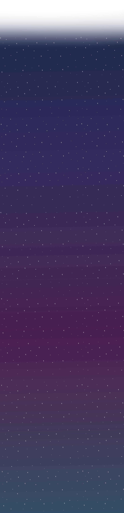

Events & Nyheder
Støt os
Forum
Indhold
Blog
Playlister
Podcasts
Arkiv
Om os
Hvad er Radar?
Sociale medier
Samarbejdspartnere
Ofte stillede spørgsmål
Kontakt os
Telefonnummer
E-mail
Åbningstider
Feedback

STØT RADAR -
Bliv en del af Radars fællesskab Din støtte gør en forskel